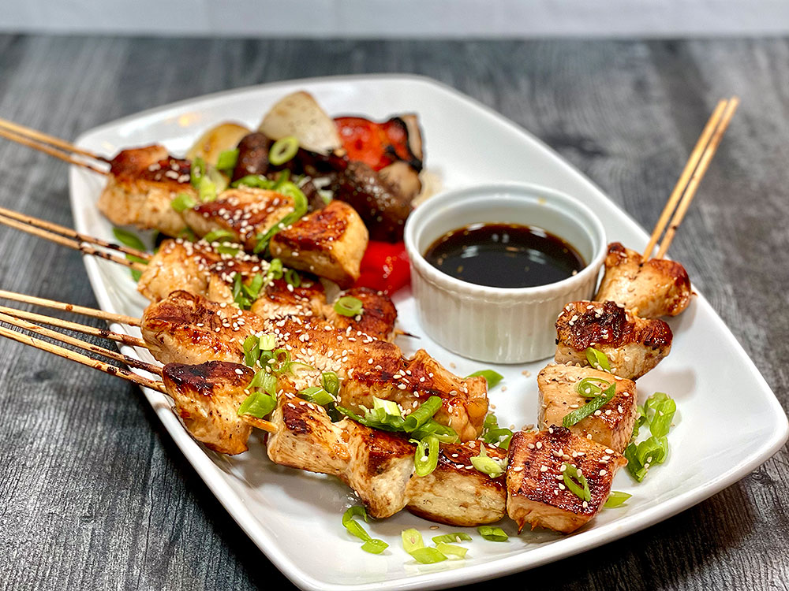
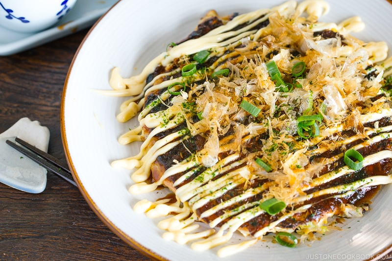

Yoko's Kitchen
Popular recipes
Yakitori - Grilled chicken
Ingredients
1. 454 g boneless, skinless chicken thighs (at room temperature)
2. 9 green onions/scallions
3. neutral-flavored oil (vegetable, rice bran, canola, etc.)
Instructions
1. Gather all the ingredients.
2. Soak about 10 to 12 (5-inch) bamboo skewers in water for 30 minutes.
3. Grease the grate of the broiler/wire rack (or oven-safe cooling rack) to keep the chicken from sticking to the grate. Place the skewers on top.
4. Set the broiler to High and wait until the heating elements are hot. Then, place the skewers under the broiler. Broil for 6 minutes.
5. After 6 minutes, brush the meat on both sides with the Yakitori Sauce. Continue to broil for 3-4 minutes to caramelize the sauce.
Tsukune - Minced chicken patties

Ingredients
1. 454 g ground chicken
2. 1 Tbsp roasted sesame oil (and more for coating your hands)
3. 1 Tbsp miso (I use koji miso or awase miso, which is a combination of red and white miso)
4. 10 shiso leaves (perilla/ooba)
5. 4 green onions/scallions
6. kosher salt (Diamond Crystal; use half for table salt)
7. 120 ml Yakitori Tare (Sauce) (homemade or store bought)
Instructions
1. Gather all the ingredients. Make the yakitori sauce first.
2. Soak 14 5-inch flat bamboo skewers in water for 30 minutes.
3. Pile and roll up the shiso leaves, then cut into thin julienne slices. Cut the scallion into thin slices.
4. Heat a non-stick frying pan over medium heat. When it's hot, add ⅓ of ground chicken and break it up into small pieces using a wooden spatula. Cook until no longer pink and transfer to a plate to let it cool.
5. Combine the cooked chicken and uncooked chicken in a large bowl and mix well with a rubber spatula.
Okonomiyaki - Savory pancakes
Ingredients
1. 120 g all-purpose flour (plain flour)
2. ¼ tsp kosher salt (Diamond Crystal; use half for table salt)
3. ¼ tsp sugar
4. ¼ tsp baking powder
5. 160 g nagaimo/yamaimo (mountain yam)
6. 180 ml dashi
7. 4 large eggs (50 g each w/o shell)
8. 8 Tbsp tenkasu/agedama (tempura scraps)
9. 4 Tbsp pickled red ginger (beni shoga or kizami beni shoga)
Instructions
1. Gather all the ingredients.
2. In a large bowl, combine all-purpose flour, salt, sugar, and baking powder and mix all together.
3. Peel and grate the nagaimo in a small bowl. Note: I don't have any issues, but the nagaimo may irritate your skin and cause itchiness. Work quickly and rinse your hands immediately after touching the nagaimo. Nagaimo is very slimy and slippery, so make sure you have a good grip on the nagaimo if you wear kitchen glove
4. Add the grated the nagaimo and dashi to the bowl.
5. Mix it all together until combined. Cover the bowl with plastic wrap and let it rest in the refrigerator for at least one hour. Tip: Resting the batter relaxes the gluten in the batter, improves the flavor, and makes the okonomiyaki fluffier. Some okonomiyaki shops refrigerate the batter overnight. Meanwhile, you can prepare the okonomiyaki sauce and other ingredients.
Mizutaki - Chicken stew
Ingredients
1. 680 g napa cabbage
2. 1 Tokyo negi (naga negi; long green onion)
3. ⅔ carrot
4. 6 stalks mizuna (Japanese mustard green)
5. 1 medium-firm tofu (momen dofu)
6. 1 package maitake mushrooms
7. 1 package shimeji mushrooms
8. 600 g bone-in skin-on chicken thighs
9. 454 g boneless, skinless chicken thighs
Instructions
1. Gather all the ingredients.
2. n a large donabe (earthenware pot, or any large, shallow pot), add 5 cups water and kombu to make cold brew kombu dashi. Set aside while you prep the chicken.
3. Use a butcher knife, cut the bone-in, skin-on chicken thighs into 2-inch bite sizes. You can ask the butcher to cut into smaller pieces as well.
4. Cut the boneless skinless chicken thighs into smaller bite size pieces (roughly 2” x 2”).
5. Fill a medium pot with water and add the bone-in, skin-on chicken thigh pieces. Turn the heat on medium-low.